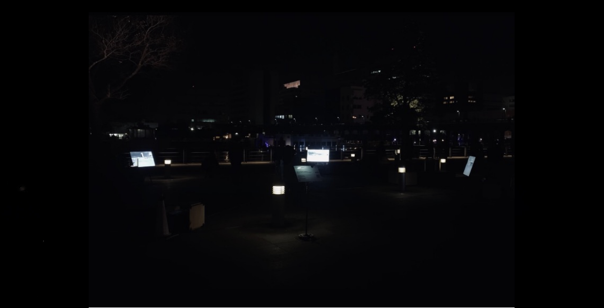
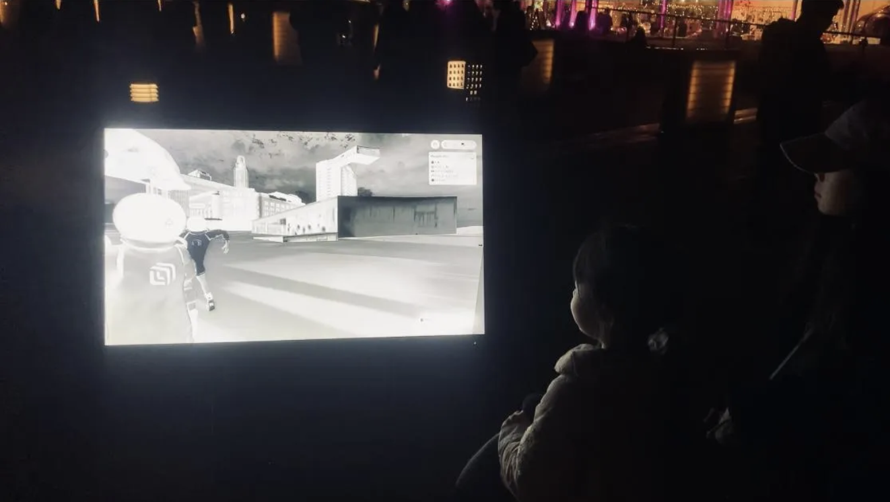
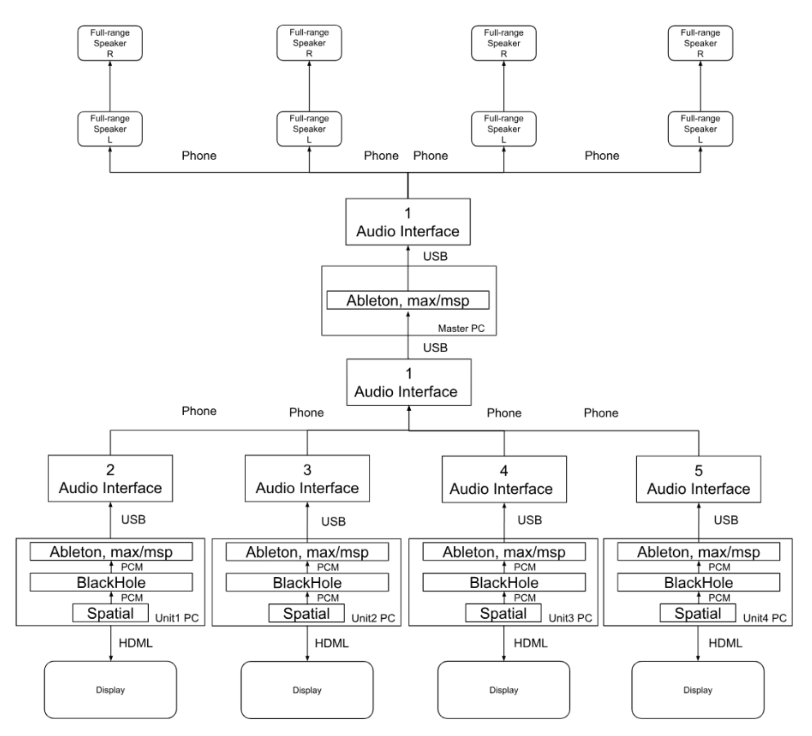
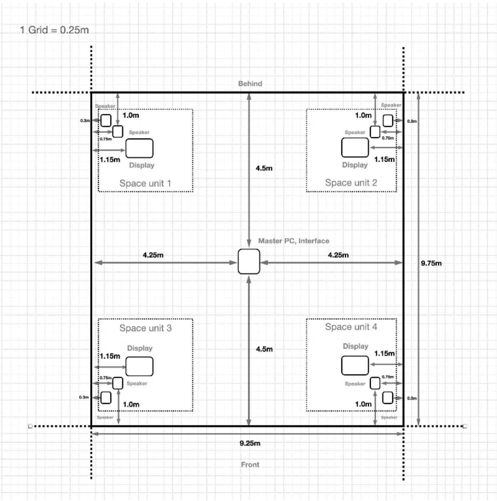

Re:Imagine

| This is a sound performance where improvised music occurs
through interaction between audience in the physical space
and performers participating as avatars in a virtual space.
The objective was to utilize the virtual space as a novel interface in the context of musical expression. The virtual space for performers to enter as avatars was constructed using Unity on the Spatial platform provided by the Spatial Co., Ltd. The sounds generated in the virtual space were output through the local speakers via the virtual audio device BlackHole and Ableton Live. Sound effects were applied during the process as the audio passed through Ableton Live. In this performance, displays and speakers were positioned at the four corners of the space to reproduce the virtual space's sound and visuals, creating an experience where the virtual and physical spaces appeared to be layered, resembling the real environment. Within the virtual space, the performer-controlled avatar moved freely, and through the local camera, the avatar could observe the audience. Upon identifying local spectators, the performer engaged in communication by using voice with effects, pronouncing, dancing, waving hands, and expressing emotions through various actions and movements. In the exhibition space, footsteps were audibly generated in sync with the avatar's movement, allowing the audience to perceive through sound that the avatar was moving within the virtual space. As the avatar moved between displays, the audience could imagine the virtual space between the displays through sound, allowing them to perceive a sense of spatiality in that virtual area. Therefore, the audience engaged in communication with the avatar by following the performer-controlled avatar's movements, freely navigating the exhibition space, and dancing together. As a result of such prompted actions from the audience, the emergent improvised music naturally created between the audience and the performer became the essence of our performance. There were no fixed rules; the expression unfolded based on the rules that emerged collaboratively between the performer and the audience, evolving through mutual interaction. Artist Keigo Yoshida Makoto Nagase Eisyu Nonaka Takuma Kikuchi Ryo Komukai Taishin Emura Shoya Maruyama Kenta Tanaka Ryoho Kobayashi Yuta Uozumi Shinya Fujii |


